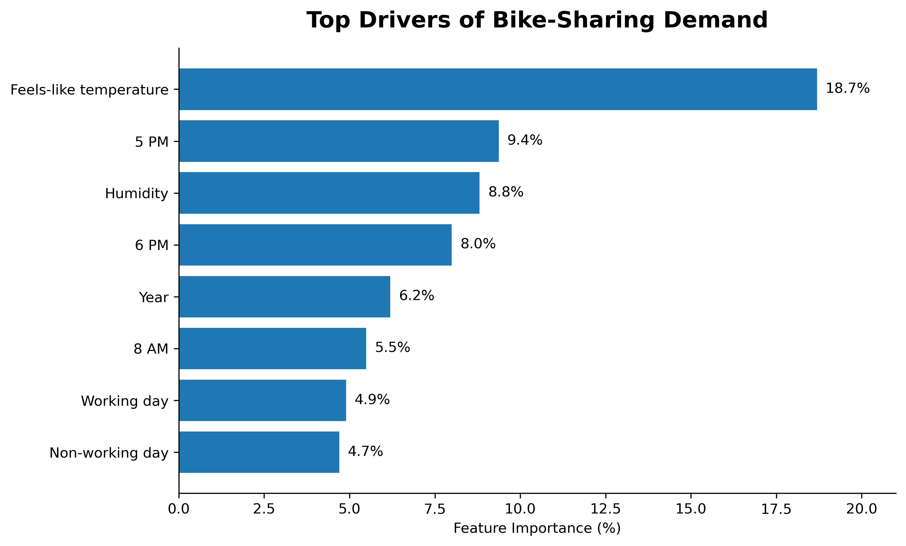
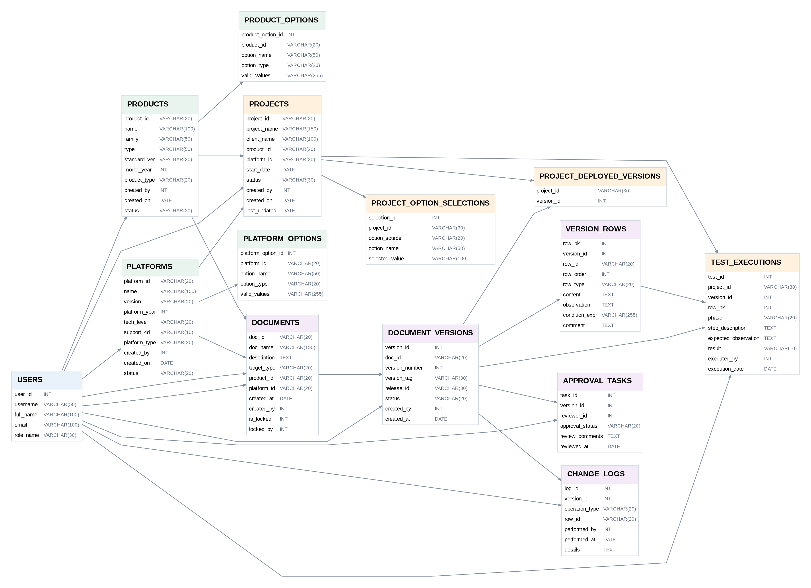

Our hackathon prototype combines an opt-in fit questionnaire with product attributes and historical fit signals to recommend suitable sizes and alternatives. It also proposes surfacing recurring fit issues to merchandising teams.
Julia Al Rifai
Business · Analytics · AI & Technology
About Me
I'm currently pursuing a Master of Management in Analytics at McGill University's Desautels Faculty of Management, following my degree in Digital Enterprise Management at the University of Toronto, where I graduated with distinction.
I'm passionate about the intersection of business, data and technology, particularly how organizations can use analytics and emerging technologies to solve problems, improve decision-making and create meaningful business value. My experience spans AI solution development, business analytics, consulting, digital marketing and project management.
Beyond the Resume
Outside of work and academics, I'm a big animal lover and enjoy horseback riding, cooking, travelling and outdoor adventures. Whether I'm hiking a new trail, spending time with animals or jumping out of a plane, I'm always excited to try something new.
Professional & Project Experience
Business Intelligence Developer (Academic Capstone)
Scotiabank · McGill University
September 2026 – Present
I'm collaborating with a team to develop an AI-powered knowledge management solution that helps bankers access Salesforce information more efficiently. The project brings together business analysis, AI solution development and knowledge management, from understanding business needs to designing, developing and evaluating the solution.
Business AnalysisGenerative AIRAGAI Solution DevelopmentMicrosoft CopilotSalesforceRequirements Gathering
Student Consultant (Academic Project)
Substance U · University of Toronto
January 2026 – March 2026
I worked with a four-person consulting team to translate evolving client needs into branding and design deliverables. Our team delivered six logos and brand guidelines, incorporating stakeholder feedback into recommendations adopted by the client.
Client ManagementConsultingRequirements GatheringStakeholder CommunicationProject Management
Paid Media Intern
Tug Agency · Toronto
June 2025 – August 2025
Analyzing Google Ads performance helped me identify opportunities for more efficient advertising. By restructuring campaigns and ad groups, I contributed to a 15% reduction in cost per click for a university recruitment campaign. I also researched AI applications in marketing.
Data AnalysisExcelGoogle AdsDigital MarketingPerformance Optimization
Peer Academic Support Facilitator
University of Toronto Mississauga · Mississauga, ON
May 2025 – July 2025
I facilitated 20 academic support sessions, adapting my approach to individual student needs. After identifying a gap in ongoing support, I developed a time-management toolkit to help students independently plan, monitor and adjust their study strategies.
Stakeholder InterviewsCommunicationProcess ImprovementFacilitation
Media Strategy Lead
Feed The Future UTM · University of Toronto Mississauga
October 2024 – May 2025
As Media Strategy Lead, I used engagement data to guide content and outreach decisions, contributing to a 30% increase in engagement while supporting the promotion of five campus events.
Digital StrategyData-Driven MarketingLeadershipContent Analytics
IsoWatch proposes combining under-mattress sensing, continuous pulse oximetry, electronic health records and nurse assignments to identify sustained changes from a patient's baseline and coordinate timely clinical alerts.
Predictive analytics and cost-based decision modeling to identify when retail return prevention is economically justified.

Bike Sharing Demand Prediction
Built and evaluated machine learning models to predict hourly bike-sharing demand using weather and time-based data. Achieved an R² of 0.812 with Random Forest and identified key demand drivers to inform operational planning.
Python · Pandas · Scikit-learn

ACME Simulators — Database Design & SQL Analysis
Collaboratively designed and implemented a 14-table relational database to manage simulator configurations, technical documentation, approvals, and testing. Developed 20 SQL queries to support operational workflows, document version control, and business reporting.
SQL · MySQL · Database Design · ER Modeling

UTM Connect — Product Strategy & Development
Led project planning and supported MVP development for a campus event discovery app. Translated student needs into product requirements, contributed to Figma wireframes, and used usability testing feedback to identify opportunities for improvement.
Product Strategy · Business Analysis · Figma · UX Testing
First Place · McGill × ALDO Group · October 2026
ALDO FIT: Agentic AI for footwear fit
Retail Strategist · Team Ascent
The challenge
Online footwear shoppers cannot always judge fit before purchasing. Poor fit can lead to avoidable returns, friction for customers and operational costs for retailers.
Our solution
Our hackathon prototype combines an opt-in fit questionnaire with product attributes and historical fit signals to recommend suitable sizes and alternatives. It also proposes surfacing recurring fit issues to merchandising teams.
How it works
1
Understand shopper fit preferences
2
Investigate product and fit evidence
3
Assess confidence and ask clarifying questions
4
Recommend and explain suitable alternatives
Technology & approach
AWS Bedrock · Agentic AI · Tool orchestration · Product prototyping
My contribution
I helped shape the business problem and solution thesis, designed elements of the customer-facing product page and onboarding questionnaire, and contributed to the final pitch. I focused on connecting the AI capabilities to customer needs and practical retail value.
Evaluation & responsible AI
We proposed a phased pilot to evaluate fit-related returns, recommendation adoption and customer outcomes. The agent advises rather than transacts, explains recommendations and routes restricted requests to human reviewers.
Results & recognition
Our team earned first place. The solution was a hackathon prototype, not a deployed ALDO product. Proprietary data and financial projections are intentionally omitted.
Second Place · SCOPE AI-Thon · November 2026
IsoWatch: AI-enabled monitoring for hospital isolation rooms
Data & AI Scoping · Solution Design
The challenge
Isolation precautions can make frequent bedside assessments more difficult. Respiratory deterioration may go unnoticed between routine observations.
Our solution
IsoWatch proposes combining under-mattress sensing, continuous pulse oximetry, electronic health records and nurse assignments to identify sustained changes from a patient's baseline and coordinate timely clinical alerts.
How it works
1
Combine monitoring signals and clinical context
2
Detect sustained changes from baseline
3
Prioritize and route alerts to the care team
4
Track acknowledgement and clinical assessment
Technology & approach
Clinical data strategy · MIMIC-IV feasibility assessment · Agentic AI workflow · Human oversight
My contribution
I contributed to data and AI scoping, end-to-end solution design, presentation and video scripting, and the final project summary. I helped translate the proposed detection approach into a practical clinical workflow.
Evaluation & responsible AI
Our proposal included a silent-mode pilot, comparison with NEWS2, and evaluation of lead time, sensitivity and alerts per patient-day. Safeguards include signal-quality flags, escalation of unanswered alerts and continued routine checks.
Results & recognition
Our team earned second place. IsoWatch is a clinical technology proposal, not a clinically validated or deployed medical system. Clinicians retain all treatment decisions.
McGill Desautels · MGSC 661 · November 2026
ReturnGuard: From Prediction to Decision
Team project · Predictive analytics & decision support
The challenge
Online retailers need to reduce avoidable returns without creating unnecessary friction or spending more on interventions than they save.
Our solution
We developed a return-risk model and an economic decision framework using the ASOS GraphReturns research dataset. Calibrated probabilities inform whether an intervention is worth its cost.
2.8M
Original purchase records; approximately 1.8M retained after preparation
8
Model configurations compared
0.687
Later-period ROC-AUC
100
Economic scenarios evaluated
Technical approach
We removed potentially leaky predictors, used five-fold customer-grouped cross-validation, compared logistic regression and LightGBM configurations, calibrated probabilities using earlier-period predictions and evaluated performance on later-period data. Adjusted logistic regression examined associations rather than causal effects.
Risk differentiation
Lowest-risk decile — 22.8%
Highest-risk decile — 79%
From prediction to business decision
Intervene when predicted return probability × intervention effectiveness × return cost exceeds intervention cost. Under illustrative assumptions of 20 units per return, 1 unit per intervention and 10% effectiveness, the break-even risk is 50%.
17.3 units
Simulated net benefit per 100 purchases using the economic rule
13.4 units
Simulated net benefit using the maximum-F1 rule
These are simulated results, not realized savings or actual retailer operating costs.
My contribution
Collaborated with the team across the project lifecycle, including business problem definition, predictive modeling, model evaluation, economic scenario analysis, the decision-support approach and final presentation.
Limitations & next steps
Missing purchase timestamps limited historical features; performance varied across markets and new products. Deployment would require retailer-specific recalibration, validation and A/B testing of intervention effectiveness.
Skills & tools
Python · LightGBM · Logistic Regression · Machine Learning · Model Evaluation · Statistical Analysis · Decision Analytics · Scenario Analysis